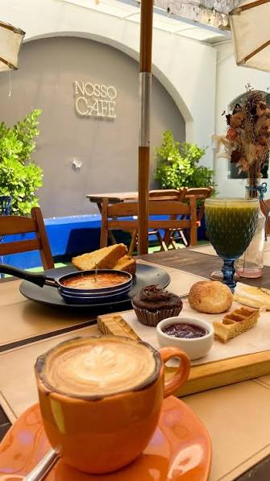
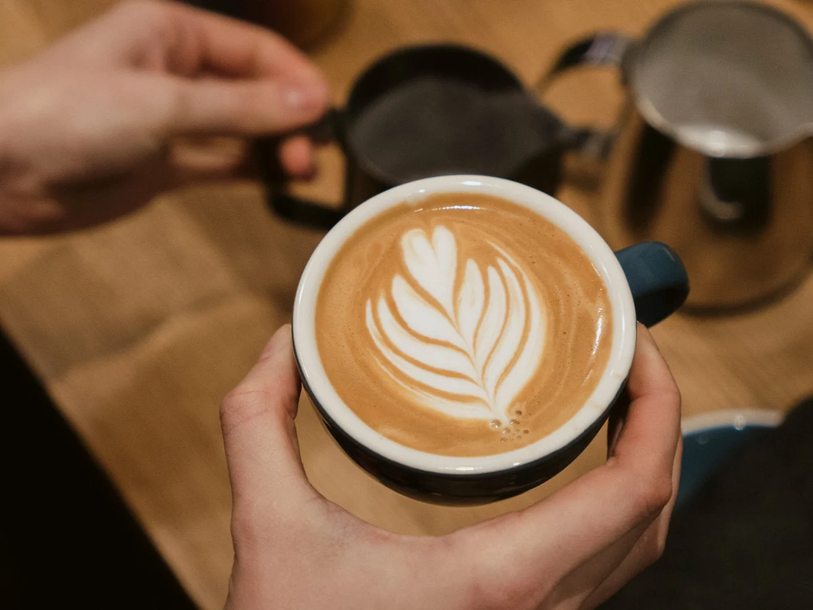
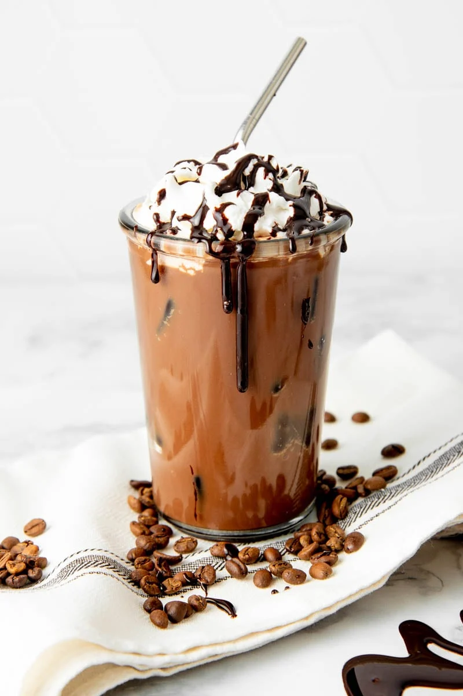

1
Cultivo e colheita
Trabalhamos com pequenos produtores que cultivam os grãos de forma sustentável e colhem apenas os frutos no ponto ideal de maturação.

Na Bárbara's Coffee, selecionamos grãos especiais e preparamos cada bebida com cuidado para transformar o seu dia. Venha sentir o aroma, o sabor e o aconchego de um café feito de verdade.
Do cultivo à xícara, cada etapa é feita com atenção e respeito ao grão.
Trabalhamos com pequenos produtores que cultivam os grãos de forma sustentável e colhem apenas os frutos no ponto ideal de maturação.
Os grãos secam naturalmente ao sol e passam por uma seleção rigorosa, garantindo qualidade e uniformidade em cada lote.
A torra é feita em pequenos lotes para realçar aroma e sabor, e a moagem acontece pouco antes do preparo para manter o café sempre fresco.
Algumas das nossas bebidas favoritas, preparadas na hora para você.

Intenso, encorpado e com crema aveludada. Para quem ama o sabor puro do café.

Equilíbrio perfeito entre café, leite vaporizado e uma cremosa camada de espuma.

Café, chocolate e leite se encontram nesta bebida doce e reconfortante.